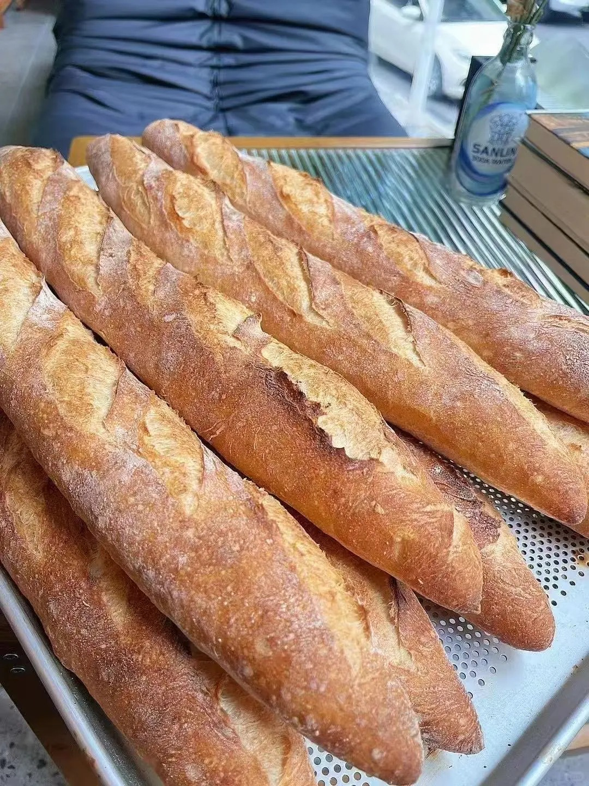
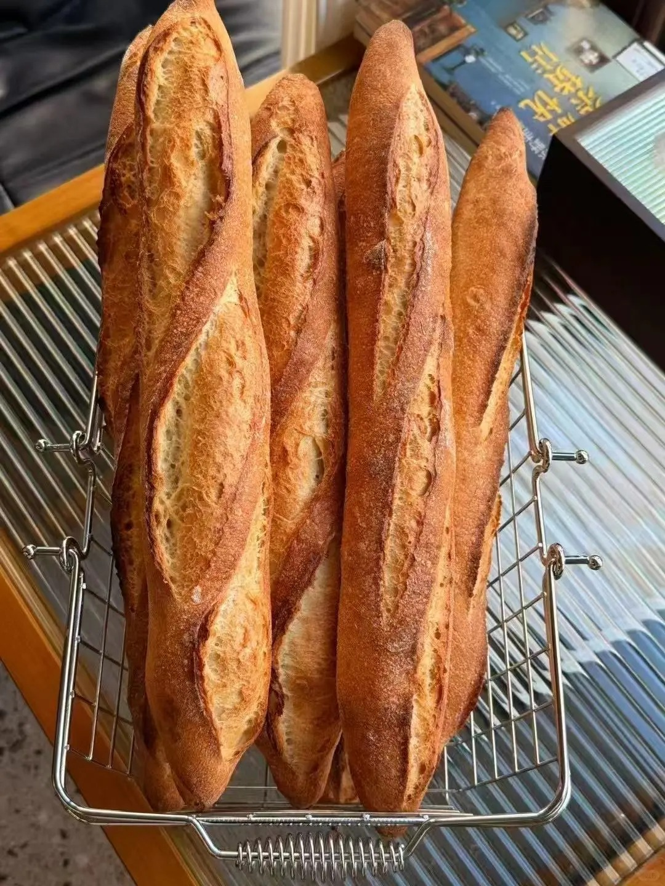

法棍



法式长棍面包(baguette)是一种最传统的法式面包。baguette原意是长条形的宝石，这根长长的面包已然成为法国一种传统文化的标志，已有一百多年的历史。 它是由面粉、水、盐和酵母制作，通常不加糖，不加乳粉，不加或几乎不加油，小麦粉未经漂白，不含防腐剂，面团用刀刻上划痕后放入高温烤箱中烘烤的面包。法棍是由19世纪中期，奥地利维也纳的面包工艺传承下来的。二十世纪20年代，为了缩短面包师的工作时间，出台了一项法令。法令规定面包师不得凌晨4点以前做工，这就使得当时人们在早餐时食用的圆形面包难以完成制作。 为了缩短发酵、烘烤面包的时间，法国面包师从维也纳引进了长棍面包的做法，因为它的准备和烘焙更为迅速。